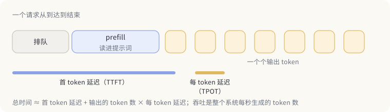
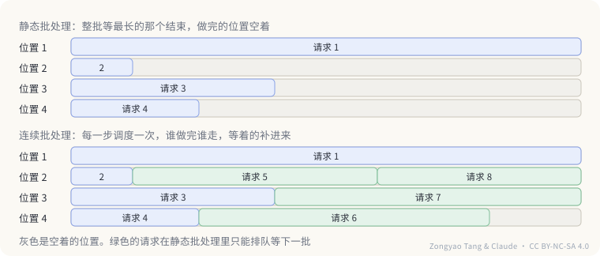

线索是：先说清楚推理服务追求的是什么，它有三个互相牵制的指标 → 提高吞吐的核心手段是连续批处理 → 但 9.1 讲过 prefill 和 decode 性格不同，把它们混在一个 batch 里会出问题 → 于是调度变成了在吞吐和延迟之间找平衡 → 最后是两种“少算一些”的办法。这一单元和训练的调度（第 8 部分）对照着看很有意思：同样是把工作安排到 GPU 上，训练追求总量，推理还要顾及每个用户的等待。
第 9 部分 · 推理系统（选读）9.3 推理引擎：批处理、显存与调度
这一单元回答同一个模型，为什么换一个推理引擎，吞吐能差好几倍？
承接 9.1（推理的算术）：那里讲一个请求怎么算，这一单元讲很多请求同时来时怎么安排。
- 三个指标：吞吐、首个 token 的延迟、每个 token 的延迟
- 连续批处理：请求随到随进，做完就走
- prefill 和 decode 混在一起，会互相拖累
- 调度是在吞吐和延迟之间做取舍
- 少算一些：前缀缓存与投机解码
讲解
1三个指标：吞吐、首个 token 的延迟、每个 token 的延迟
推理服务不能只看“每秒生成多少 token”。用户感受到的是两种等待：发出请求到看见第一个字要多久（首 token 延迟），之后每个字出来得多快（每 token 延迟）。服务方关心的是在满足这两种延迟要求的前提下，一张卡能同时服务多少请求。
三个指标。
- *吞吐。* 整个系统每秒生成的 token 数，或者每秒完成的请求数。它决定了成本：同样的硬件服务多少用户。
- *首 token 延迟（TTFT）。* 从请求到达，到第一个输出 token 产生。它包括排队的时间和 prefill 的时间（9.1）。提示词越长，prefill 越久。
- *每 token 延迟（TPOT）。* 相邻两个输出 token 之间的间隔，也就是 decode 每一步的时间。它决定了文字“流出来”的速度。
一个请求的总时间 ≈ 首 token 延迟 + 输出的 token 数 × 每 token 延迟。

两个延迟各量的是哪一段 不同的应用看重的不一样。
- 聊天：首 token 要快（用户在等回应），每 token 的速度只要超过人的阅读速度就够了。
- 代码补全：两者都要很快，否则打断思路。
- 离线批处理（给一百万篇文档做摘要）：只看吞吐，单个请求等多久无所谓。
为什么互相牵制。 9.1 讲过，decode 是带宽受限的，把更多请求放进一个 batch，读一遍权重能服务更多人，吞吐几乎成比例地上升。但 batch 越大，每一步的时间也越长，每个用户的每 token 延迟随之变差；新来的请求要等的时间也可能更长。吞吐和延迟在这里是此消彼长的。
所以实际的目标通常这样表述：设定延迟的上限（比如首 token 不超过 1 秒、每 token 不超过 50 毫秒），在绝大多数请求都满足它的前提下，让吞吐尽量高。有的论文把“满足延迟要求的那部分吞吐”单独叫作有效吞吐（goodput）。
和训练对比。 训练只有一个指标：吞吐（0.2）。所有的样本都在手里，可以任意安排顺序和 batch。推理的请求是陆续到达的，长度各不相同、事先也不知道会生成多长，而且每个请求背后有一个人在等。所以推理系统多了一整层训练系统没有的东西：调度。这一单元后面讲的都是它。
打个比方像一家餐厅：老板看的是一晚上翻了多少桌（吞吐）；客人在意的是坐下后多久上第一道菜、之后每道菜隔多久。只追求翻台数，把所有菜攒到一起做，每位客人都会等得不耐烦。
所以推理系统的优化目标是带约束的：在延迟不超标的前提下把吞吐做到最大。很多设计在不同的场景下结论相反，就是因为它们对延迟的要求不同。
后面会用到 连续批处理：请求随到随进，做完就走- 9.1 讲过批处理为什么能提高吞吐。问题是，生成任务的批处理比训练难得多。
2连续批处理：请求随到随进，做完就走
传统的批处理要等一批请求凑齐，一起开始、一起结束。生成任务的长度各不相同，短的请求做完了也得陪着长的等。连续批处理把调度的粒度从“一个请求”缩小到“一步”：每生成一个 token 之后，就检查一次，把已经结束的请求移出去，把新到的请求加进来。
静态批处理的浪费。 把 8 个请求组成一个 batch 开始生成。其中一个只需要 10 个 token，另一个需要 1000 个。
- 那个短请求在第 10 步就做完了，但 batch 要等最长的那个结束。之后的 990 步里，它的位置空着（或者在算没用的填充）。
- 这期间新到的请求只能排队，等这一批全部结束才能开始。
batch 的有效大小随时间不断缩小，新请求的首 token 延迟又很长。两头都不讨好。

同样四个位置，两种调度（示意） 连续批处理（也叫迭代级调度）。 关键的观察是：decode 的每一步对所有请求都是一样的操作（各自算一个新 token），步与步之间没有必须绑在一起的理由。所以调度可以每一步做一次：
- 这一步结束后，哪些请求生成了结束符或者达到了长度上限：把它们的结果返回，从 batch 里移除，释放它们的 KV cache。
- 等待队列里有没有新请求、显存放不放得下：有就加进来。
- 用新的这组请求做下一步。
Orca 这篇论文最早系统地提出了这个做法。现在的推理引擎（vLLM、TGI、SGLang 等）都是这样工作的。
新请求怎么“插进来”。 新加入的请求要先做 prefill（处理它的整段提示词），而 batch 里的老请求在做 decode（各算一个 token）。最直接的办法是把它们放在同一次前向里：老请求每个贡献 1 个位置，新请求贡献它提示词的全部位置。这带来下一节要讲的问题。
它对显存管理提出了要求。 请求进进出出，每个请求的 KV cache 又随着生成不断增长，而且事先不知道会长到多大。按最大长度为每个请求预留显存，大部分会浪费；不预留，又要能随时给它追加。9.1 讲的 PagedAttention 就是为此设计的：把 KV cache 切成固定大小的块，用到多少分配多少。连续批处理和分页的显存管理是配套的。
一张卡能放多少并发。 上限通常由 KV cache 决定（4.1、9.1）：显存总量减去模型权重，剩下的除以每个请求平均的 KV cache 大小。达到这个上限后，新请求只能排队，首 token 延迟开始上升。这是判断“该加机器了”的信号。
打个比方像一辆不停站的环线公交和一辆旅游大巴的区别：大巴要等所有人到齐才发车，到了终点一起下；环线公交每到一站都有人上、有人下，车上始终是满的。
所以 GPU 上的 batch 始终保持在高位，新请求也不用等上一批结束。它是现代推理引擎吞吐高的第一个原因，也是 9.1 讲的“批处理提高算术强度”能真正用起来的前提。
- 上一节说，新请求的 prefill 可以和老请求的 decode 放在同一步里。这样做有一个副作用。
3prefill 和 decode 混在一起，会互相拖累
一次 prefill 要处理几百上千个位置，是一大块算力受限的计算；一步 decode 每个请求只算一个位置，本来很快。把一个长的 prefill 和一批 decode 放进同一次前向，这一步的时间就由 prefill 决定。所有正在生成的用户，都要等这个新来的请求处理完提示词，才能拿到下一个 token。
两个阶段的差别（9.1）。
prefill decode 一次处理 提示词的所有位置（几百到几万个） 每个请求 1 个位置 运算 大矩阵乘大矩阵 矩阵乘向量（批起来后是矩阵乘小矩阵） 瓶颈 算力 显存带宽 影响的指标 首 token 延迟 每 token 延迟 干扰是怎么发生的。 设 batch 里有 30 个请求在 decode，每一步 20 毫秒。这时来了一个带 4000 个 token 提示词的新请求。把它的 prefill 并进下一步：这一步要处理 30 + 4000 个位置，可能要 300 毫秒。那 30 个用户的这一个 token 就等了 300 毫秒，输出明显地卡了一下。请求来得越频繁、提示词越长，这种卡顿越多。
反过来，如果为了保护 decode 而让 prefill 一直等，新请求的首 token 延迟又会变得很长。
解法一：分块 prefill。 Sarathi-Serve 的做法：不一次做完 4000 个位置，每一步只做其中一块（比如 512 个），和 decode 的请求一起执行。每一步的工作量有一个上限（一个“token 预算”），所以每一步的时间是可控的。那个新请求的 prefill 分散在七八步里完成，每一步里 decode 的请求只多等一点。
这在数学上是可行的，因为 prefill 的各个位置之间只有“后面的依赖前面的”这一种关系（1.4 的因果掩码）：先算前 512 个，把它们的 K、V 存进缓存，再算接下来的 512 个，结果和一次算完相同。
块的大小是一个旋钮：小了，对 decode 的干扰小，但 prefill 拖得久、总的开销也大一些；大了，正相反。
解法二：分离部署。 DistServe 的做法：用两组 GPU，一组只做 prefill，另一组只做 decode。一个请求先在 prefill 的机器上处理完提示词，再把得到的 KV cache 传给 decode 的机器继续生成。
- 两个阶段完全不干扰。
- 两组机器可以各自按自己的瓶颈来配置和调度：prefill 那边按算力优化、batch 小一些以保证首 token 延迟；decode 那边把 batch 开大以提高吞吐。
- 代价是要在机器之间传 KV cache（9.1 算过它的大小，可以有几百 MB 到几 GB），需要足够快的网络；以及两组机器的比例要和实际的负载匹配。
这是 0.1 的老问题换了一个场景。 4.1 说同一个算子在训练和推理时“在等不同的东西”。这里更进一步：同一个请求的两个阶段在等不同的东西。把在等算力的和在等带宽的硬放在一起，谁都用不好。先分清它们在等什么，再决定怎么安排。
打个比方像一条收银通道：前面的人每人只买一瓶水，几秒一个；突然来了一个推着满满一车货的人。后面买水的人全都被他卡住了。
所以连续批处理不能“来者不拒”。两种主要的解法：把长的 prefill 切成小块，每一步只做一块；或者干脆用不同的 GPU 分别做 prefill 和 decode。
后面会用到 调度是在吞吐和延迟之间做取舍- 前面两节其实都是调度问题的一部分。把它完整地摆出来。
4调度是在吞吐和延迟之间做取舍
推理引擎每一步都要做几个决定：这一步放多少请求、新请求什么时候放进来、显存不够时先让谁等。把 batch 开大、让请求多等一会儿凑批，吞吐高但延迟差；反过来则延迟好、吞吐低。没有对所有场景都最优的策略，只有针对某个延迟目标的最优。
调度器手里的旋钮。
- *最大并发数（batch 上限）。* 越大吞吐越高，每 token 延迟越差，KV cache 占用越多。
- *新请求的准入。* 来了就放进去，还是等一等？放进去会不会让 batch 里的人卡顿（上一节）？
- *每一步的 token 预算。* 这一步总共处理多少个位置，其中多少给 prefill。
- *显存不够时。* KV cache 满了，是让新请求排队，还是暂停某个正在生成的请求、把它的缓存腾出来（之后重算或者从别处恢复）？
- *先后顺序。* 先到先服务最简单。但一个要生成 5000 个 token 的请求排在前面，会让后面很多短请求久等。有的系统尝试预测输出长度，让短的先做。
一条典型的曲线。 逐步提高请求到达的速率，画出延迟的变化：
- 负载低时：延迟很低且平稳，GPU 没吃饱。
- 负载升高：吞吐随之上升，延迟缓慢变差。这一段是效率最高的工作区间。
- 接近容量：排队开始出现，首 token 延迟急剧上升。
- 超过容量：队列越积越长，延迟无限增长。
“这套系统的容量”指的是延迟刚好还满足要求时的那个请求速率。不同的延迟要求，对应曲线上不同的点。
为什么要看尾部。 平均延迟好看，不代表用户体验好：少数请求遇到了卡顿或长时间排队，平均值反映不出来。0.2 讲过“平均值会骗人”。推理服务通常看第 90 或第 99 百分位的延迟：百分之九十九的请求不超过多少。上一节讲的 prefill 干扰，伤害的主要就是尾部。
压测要像真的。 用固定的 batch、固定长度的输入反复跑，测出来的是引擎的峰值能力，和线上的表现可能差很远。真实的负载是：请求随机到达、有时成群地来；提示词和输出的长度分布很宽；有的带很长的共享前缀（下一节）。
和第 8 部分的对照。 两处都是调度，目标函数不同：
训练集群的调度（8.2） 推理引擎的调度 调度的对象 作业（几小时到几周） 请求的每一步（几十毫秒） 目标 利用率、公平 延迟约束下的吞吐 成组的要求 一个作业的卡要同时就位 无，请求互相独立 抢占的代价 丢掉上次检查点之后的进度 丢掉或搬走 KV cache 推理服务本身也运行在集群上：很多个引擎的副本，前面有一层把请求分发给它们，再根据负载增减副本的数量。那一层的问题（往哪个副本发、什么时候扩容）又是一层调度。
打个比方像电梯的调度：每来一个人就立刻运行，每个人等得最少，但电梯总是空跑；等人坐满再走，运力最高，但先进来的人要等很久。写字楼的早高峰和深夜，合适的策略完全不同。
所以评价一个推理系统，要看它在给定的延迟要求下能撑住多高的请求速率，而不是它在某个固定 batch 下的峰值吞吐。压测时也要用接近真实的请求到达模式。
后面会用到 少算一些：前缀缓存与投机解码- 最后是两种思路不同的优化：不是把同样的工作安排得更好，而是让要做的工作变少。
5少算一些：前缀缓存与投机解码
两种不靠调度、而是直接减少计算量的办法。前缀缓存：很多请求以同样的内容开头（同一段系统提示、同一份文档），这一段的 KV cache 算一次就可以给所有请求共用，省掉重复的 prefill。投机解码：用一个小而快的模型先猜出后面几个 token，再让大模型一次性验证这几个，猜对的就直接采用，把几步串行的 decode 变成一步。
前缀缓存。
*依据。* 1.4 的因果掩码保证了：一个位置的 K 和 V 只取决于它和它前面的内容。两个请求如果前 2000 个 token 完全相同，这 2000 个位置在每一层的 K、V 也完全相同。
*做法。* 把算过的前缀的 KV cache 留着，记下它对应的 token 序列。新请求到来时，找出它和已有缓存的最长公共前缀，这一段直接复用，只对后面不同的部分做 prefill。
*什么时候有效。* 常见的重复前缀：每个请求都带的系统提示词；多轮对话里之前的全部对话历史；很多个问题针对同一份长文档；带着同一组示例的批量任务。在这些场景里，prefill 的计算量可以省掉大半，首 token 延迟明显下降。
*代价。* 缓存占显存，要决定留哪些、淘汰哪些。9.1 讲的分页式管理让“多个请求共享同一段缓存”很自然：它们的页表指向同样的物理块。SGLang 用一棵前缀树来组织这些缓存。
这是 0.1 里“把算过的结果留在手边反复用”的又一个层次：KV cache 是一个请求内部的复用，前缀缓存是跨请求的复用。
投机解码。
*依据。* decode 慢，是因为必须一个 token 一个 token 串行地来（1.4）。但大模型验证一串 token 是可以并行的：把这几个 token 一次性送进去，像 prefill 那样同时算出每个位置上“我自己会选什么”。4.1 讲过，单用户 decode 时算力是闲着的，瓶颈在读权重。一次读权重同时验证 5 个位置，几乎不比算 1 个位置多花时间。
*做法。*
- 用一个小得多的“草稿”模型，快速地串行生成接下来的 k 个 token（比如 5 个）。
- 大模型一次前向，并行地算出这 k 个位置上自己的预测。
- 从头比较：草稿和大模型一致的前几个 token 全部采用；在第一个不一致的位置，用大模型的结果，后面的丢弃。
- 重复。
只要设计得当，最后的输出和只用大模型时在分布上完全一样，它只是换了一种方式得到同样的结果。
*什么时候有效。* 草稿猜得准的时候：有很多“显而易见”的后续，比如代码里的固定写法、常见词组的后半截。如果平均每次能采用 3 个 token，大模型的前向次数就减少到原来的三分之一左右。草稿经常猜错时，大模型的前向一次也没少，还白白多跑了草稿模型。
*在高并发的服务里。* 它的好处会打折扣。投机解码利用的是“decode 时算力闲着”。而批处理（9.1）已经在用另一种方式利用这些闲着的算力了。batch 开得很大、接近算力受限时，再让每个请求多验证几个位置，就要和别的请求抢算力。所以它更适合并发不高、追求单个请求速度的场景。
共同点。 两者都不改变模型，也不（在设计正确时）改变输出，只是利用了请求内容里的规律。它们和量化（9.2）、和调度（前面几节）互相独立，可以叠加。按 11.1 的原则，叠加之前先问每一种在对付什么：前缀缓存减少 prefill 的算力消耗，投机解码减少 decode 的串行步数，量化减少每一步要读的字节数。
打个比方前缀缓存像老师批改同一道题的一百份答卷：题目只需要读一遍。投机解码像一位资深编辑带着实习生：实习生先写出一段草稿，编辑扫一眼，对的地方直接通过，从第一个不对的地方开始自己改。
所以这两种办法利用的都是工作负载里的“规律”：重复的前缀、容易猜的后续。负载里没有这些规律时，它们没有用，甚至有额外的开销。用之前要看自己的请求长什么样。
串起来
推理服务要同时顾及吞吐和两种延迟。连续批处理让请求随到随进，把 GPU 一直填满。但 prefill 吃算力、decode 吃带宽，混在一起时长的 prefill 会让所有人的下一个 token 变慢；办法是把 prefill 切块，或者把两个阶段分到不同的 GPU 上。前缀缓存和投机解码则直接减少了要做的计算。
考考自己
不看讲解，用自己的话讲一遍。
- 推理服务的三个主要性能指标是什么？为什么不能只优化吞吐？
- 连续批处理和传统的静态批处理有什么区别？它解决了生成任务的什么问题？
- 为什么 prefill 和 decode 放在同一个 batch 里会损害延迟？分块 prefill 和分离部署各是怎样解决的？
- 推理引擎的调度器每一步要做哪些决定？为什么说没有通用的最优策略？
- 前缀缓存和投机解码各自省掉了哪一部分计算？它们在什么条件下才有效？
术语
- continuous batching
- 连续批处理
- time to first token
- 首 token 延迟
- time per output token
- 每 token 延迟
- chunked prefill
- 分块 prefill
- prefix caching
- 前缀缓存
- speculative decoding
- 投机解码
- goodput
- 满足延迟要求的有效吞吐